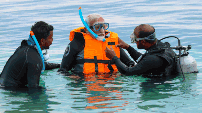
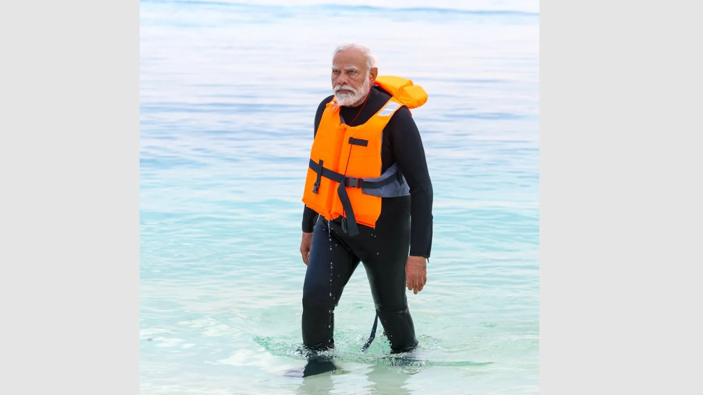

PM Modi shares glimpses of snorkelling adventure in Lakshadweep
He also shared pictures of his early morning walks on the pristine beaches of Laskhadweep and some moments of leisure, sitting on a chair by the beach
"During my stay, I also tried snorkelling - what an exhilarating experience it was!" Modi wrote on X. (Photo/X/@narendramodi)
Prime Minister Narendra Modi went snorkelling to explore the undersea life during his recent visit to Lakshadweep, and posted pictures of his adventure calling it an “exhilarating experience” of the sojourn in the islands located in the Arabian Sea.
In multiple posts on X, Modi also shared pictures of his early morning walks on the pristine beaches of Lakshadweep and some moments of leisure, sitting on a chair by the beach.

visit has been an enriching journey of learning and growing,” Modi said.
Modi’s posts on his trip were quick to grab Congress’s criticism, which said “PM Modi is an expert in the art of running away from responsibilities.
”Reacting on the pictures in a post on X, the party said: “The Prime Minister of India is having fun. Great photography is taking place on the seashore… Photos are being taken in different dresses. A wonderful pose is being given: Sometimes relaxing on the shore, sometimes playing with the waves of the sea.”